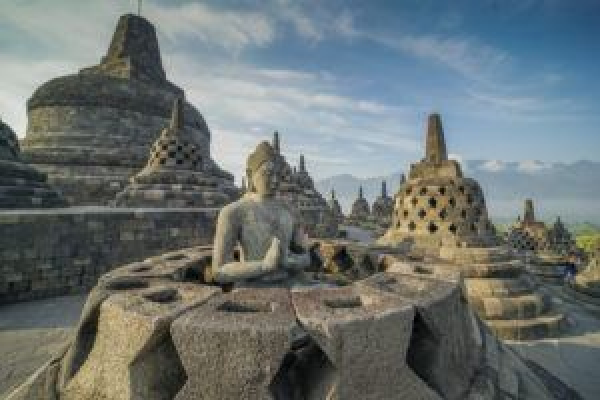
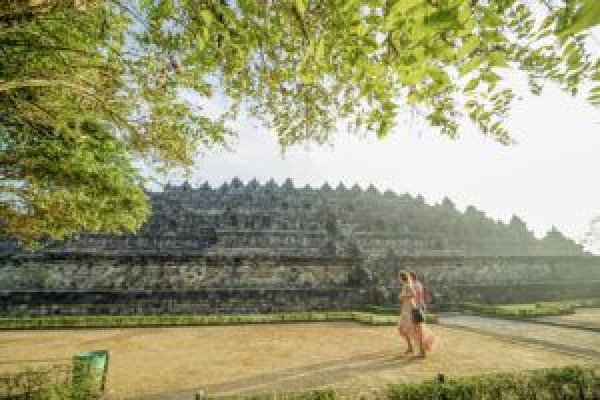
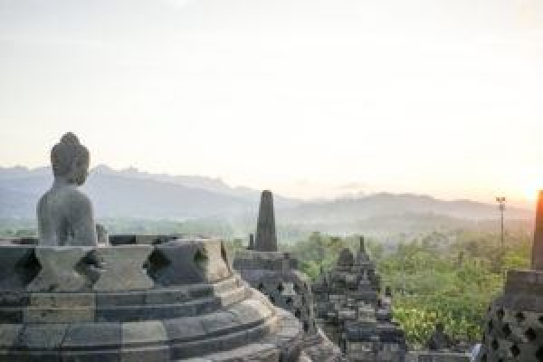

Dinasti Sailendra membangun peninggalan Budha terbesar di dunia
antara 780-840 Masehi. Dinasti Sailendra merupakan dinasti yang
berkuasa pada masa itu. Peninggalan ini dibangun sebagai tempat
pemujaan Budha dan tempat ziarah. Tempat ini berisi petunjuk agar
manusia menjauhkan diri dari nafsu dunia dan menuju pencerahan dan
kebijaksanaan menurut Buddha. Peninggalan ini ditemukan oleh
Pasukan Inggris pada tahun 1814 dibawah pimpinan Sir Thomas Stanford
Raffles. Area candi berhasil dibersihkan seluruhnya pada tahun 1835.
Borobudur dibangun dengan gaya Mandala yang mencerminkan alam
semesta dalam kepercayaan Buddha. Struktur bangunan ini berbentuk
kotak dengan empat pintu masuk dan titik pusat berbentuk lingkaran.
Jika dilihat dari luar hingga ke dalam terbagi menjadi dua bagian
yaitu alam dunia yang terbagi menjadi tiga zona di bagian luar, dan
alam Nirwana di bagian pusat.

Zona 1:
Kamadhatu alam dunia yang terlihat dan sedang dialami oleh manusia
sekarang. Kamadhatu terdiri dari 160 relief yang
menjelaskan Karmawibhangga Sutra, yaitu hukum sebab akibat.
Menggambarkan mengenai sifat dan nafsu manusia, seperti merampok,
membunuh, memperkosa, penyiksaan, dan fitnah. Tudung penutup pada
bagian dasar telah dibuka secara permanen agar pengunjung dapat
melihat relief yang tersembunyi di bagian bawah. Koleksi foto
seluruh 160 foto relief dapat dilihat di Museum Candi Borobudur yang
terdapat di Borobudur Archaeological Park.

Zona 2:
Rupadhatu alam peralihan, dimana manusia telah dibebaskan dari
urusan dunia. Rapadhatu terdiri dari galeri ukiran relief batu dan
patung buddha. Secara keseluruhan ada 328 patung Buddha yang juga
memiliki hiasan relief pada ukirannya. Menurut manuskrip Sansekerta
pada bagian ini terdiri dari 1300 relief yang berupa Gandhawyuha,
Lalitawistara, Jataka dan Awadana. Seluruhnya membentang sejauh 2,5
km dengan 1212 panel.

Zona 3: Arupadhatu alam tertinggi, rumah Tuhan. Tiga serambi
berbentuk lingkaran mengarah ke kubah di bagian pusat atau stupa
yang menggambarkan kebangkitan dari dunia. Pada bagian ini tidak ada
ornamen maupun hiasan, yang berarti menggambarkan kemurnian
tertinggi. Serambi pada bagian ini terdiri dari stupa berbentuk
lingkaran yang berlubang, lonceng terbalik, berisi patung Buddha
yang mengarah ke bagian luar candi. Terdapat 72 stupa secara
keseluruhan. Stupa terbesar yang berada di tengah tidak setinggi
versi aslinya yang memiliki tinggi 42m diatas tanah dengan diameter
9.9m. Berbeda dengan stupa yang mengelilinginya, stupa pusat kosong
dan menimbulkan perdebatan bahwa sebenarnya terdapat isi namun juga
ada yang berpendapat bahwa stupa tersebut memang kosong.